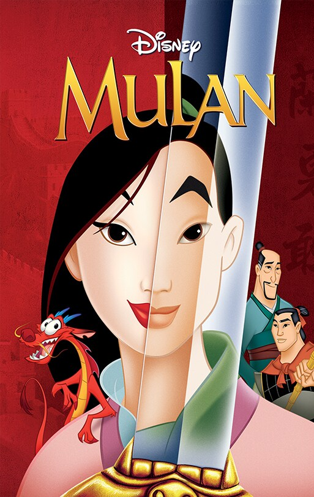
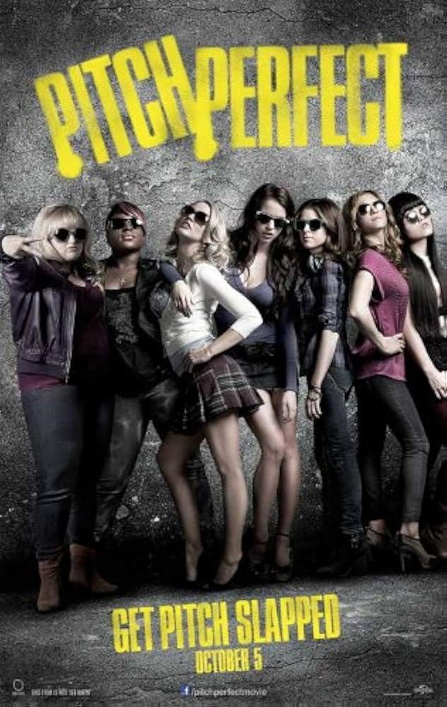
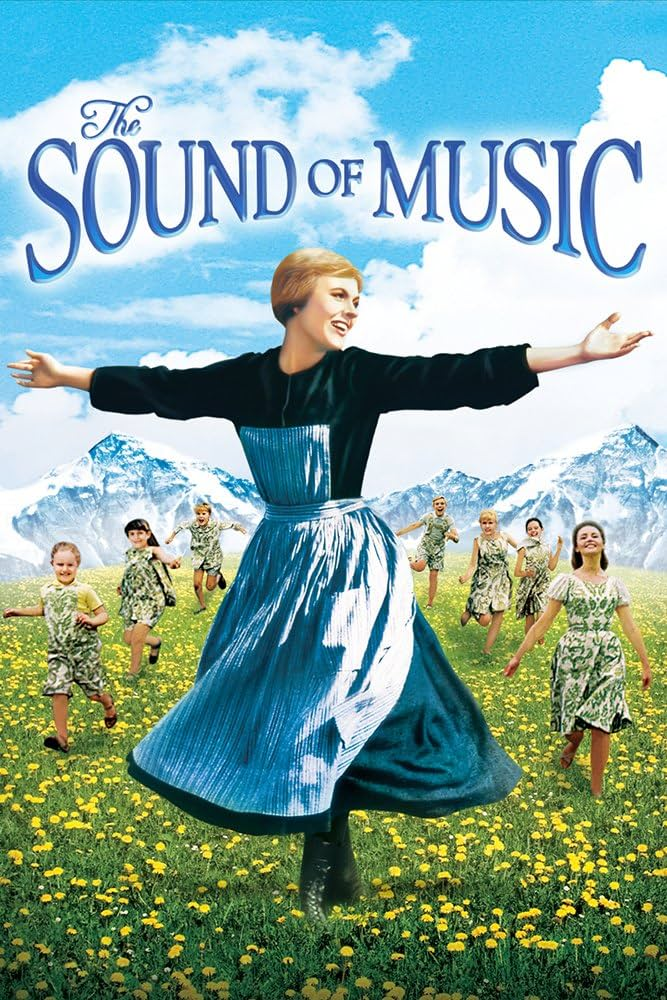

FMOAT
(Favorite Movies of All Time)
These are my top favorite movies and my favorite character(s) from the movies.
- MULAN — This is probably my favorite movie ever. I've loved it since I was a little girl. Obviously the best characters are Mulan (duh) and Mushu (also duh).

- PITCH PERFECT — The best feel good movie. I pretty much have the entire thing memorized. Best character has to go to Fat Amy.

- THE SOUND OF MUSIC — An absolute classic. One of the best musicals ever created. Julie Andrews as Maria is *chef's kiss*.

Check out IMDB for more details on these movies.